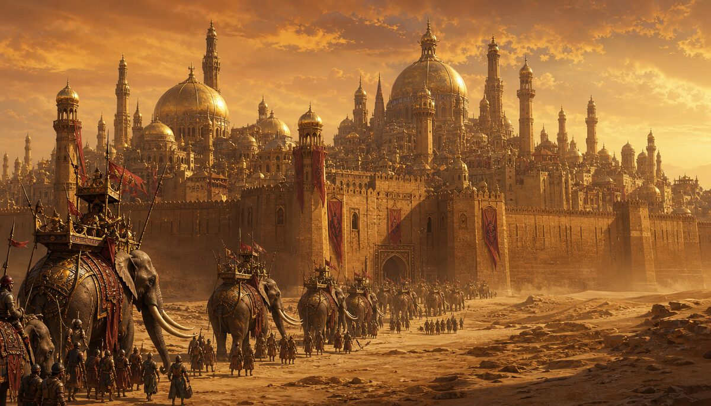
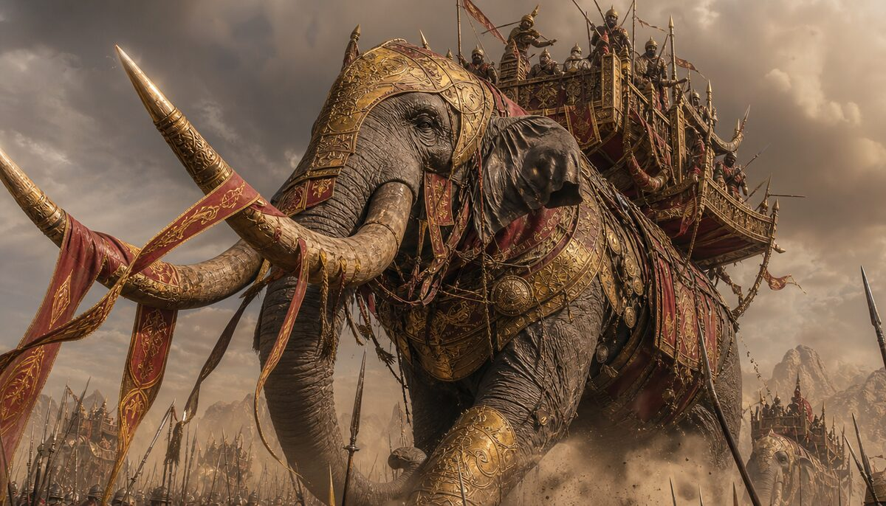
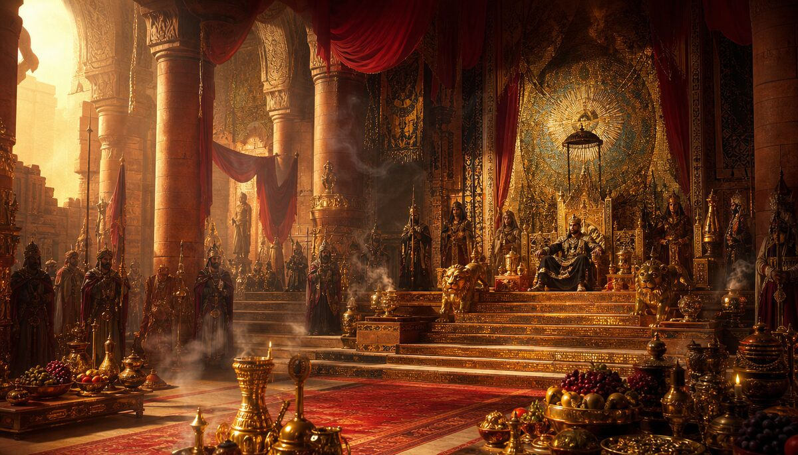
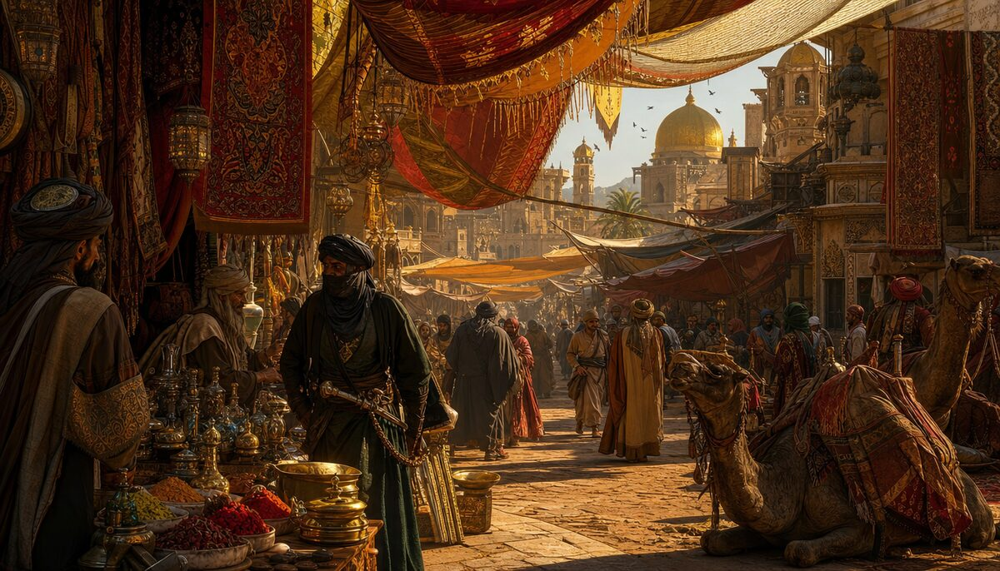
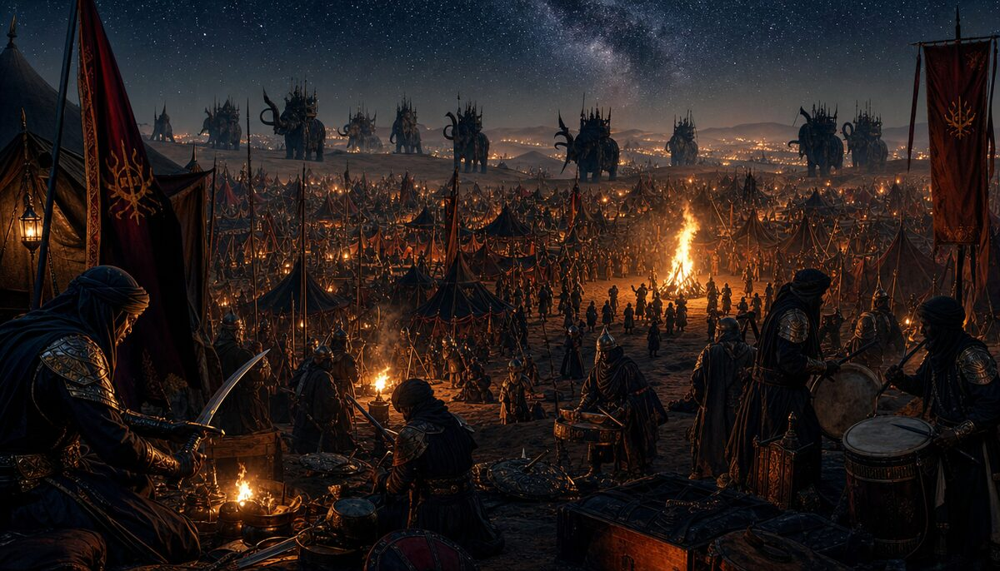
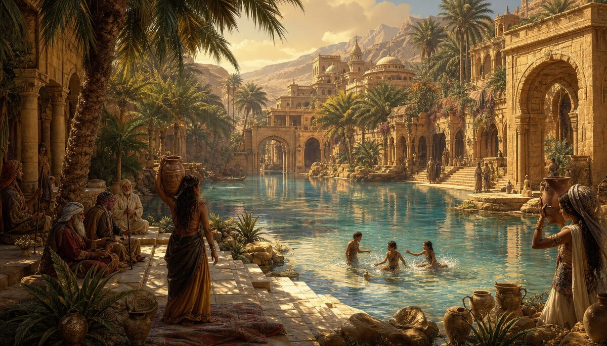

"They came from beyond the Harad Road, where the stars are strange. They brought war elephants and curved swords and a sun that followed them like a flag."
⬇
🏛️THE GOLDEN CITY
"They built their city from the same stone the sun was made of. At noon, you couldn't tell where the walls ended and the light began."

Capital of the Harad. A city of golden sandstone rising from the desert floor like a mirage that refused to dissolve. Towers with red pennants. Walls thick enough to hold back the desert and everything in it. The gates face north — toward Gondor, toward war, toward the Enemy they chose. Or were chosen by. The distinction matters less than they'd like.
🐘THE MÛMAKIL GROUNDS
"That still only counts as one."

The war elephants of Harad. Each one a walking fortress. Each one carries a tower of archers, a lifetime of training, and the knowledge that when you are riding something the size of a castle, fear is a concept that applies to other people. The Mûmakil are born in the deep south. They are raised from birth with their riders. When one dies, the other follows. That is not poetry. That is Haradrim law.
👑THE SERPENT THRONE
"The Serpent Lord does not kneel. Not to Gondor. Not to Mordor. He allies — which is different. Ask him. He'll explain. With a blade."

The throne room of the Serpent Lord. Gold and incense. Silk and steel. The Haradrim King rules from a seat carved with serpents eating their own tails — eternity devouring itself. He chose Sauron's side. History says he chose wrong. But history is written by the winners, and the Southrons have a different version. In their version, Gondor came south first.
🏪THE GRAND BAZAAR
"Every spice in the South passes through this market. Every secret too. The price for both is the same."

Before they were warriors, they were traders. The Grand Bazaar of Harad: silk from the far east, spices from the deep south, steel from Umbar, secrets from everywhere. Curved swords hang next to perfume bottles. Carpets worth a captain's ransom lie next to baskets of dates worth nothing. The bazaar does not judge. It prices. Everything has a number. Even loyalty.
⚔️THE WAR CAMP
"The drums start at dusk. By dawn, the army is moving. The dust cloud is visible from Minas Tirith. That is the point."

The night before Pelennor. Ten thousand tents. Red and gold standards snapping in the desert wind. The Mûmakil silhouetted against a sky full of stars they named differently than the North. War drums. Curved swords being sharpened. Prayers offered to gods Gondor does not recognize. Tomorrow they march. Half will not return. They know this. They sharpen the swords anyway.
🌴THE HIDDEN OASIS
"Between the wars, there is water. Between the battles, there are children. This is what they fight for. This is what they never mention."

Behind every army there is a garden. The oasis of Harad: palm trees, clear water, children who don't know the word Gondor yet. Women carrying clay jugs. Old men who were warriors once and now are gardeners — which requires the same patience and a different kind of courage. The war never reaches here. That is the lie they tell. The war reaches everywhere. But the garden grows back.
🏴☠️THE CORSAIR DOCKS OF UMBAR
"Umbar remembers Númenor. Umbar remembers the humiliation. The sea remembers nothing. The Corsairs remember everything."
The port city of Umbar. Allied to Harad, feared by Gondor. Black ships with sails like ravens' wings. The Corsairs of Umbar are Southrons who took to the sea and found that the ocean has no borders, no flags, and no king. They raid the coasts of Gondor. They call it trade. Gondor calls it piracy. The fish don't care.
🐍THE SAND WYRM DENS
"There are things in the deep desert older than Sauron. The Southrons do not worship them. They negotiate."
The deep Harad. Beyond the trade roads, beyond the cities, beyond the maps. Here the sand moves on its own. Creatures older than the rings live beneath the dunes. The Southrons know their names. They leave offerings — not out of fear, but out of respect. There is a difference. The creatures know the difference too.
🔥THE FIELD — PELENNOR
"He looked at the enemy lying dead, the young face peaceful, and wondered: where did he come from? Did someone wait for him? What was his name?"
Sam Gamgee's question. The most important question in the War of the Ring. Not "did we win?" but "who was he?" The Southron on the field of Pelennor had a name. He had a mother. He had a garden back home with an olive tree he planted when he was twelve. He had a girl who was waiting. He came north because his lord called. He died because someone else's lord called too. Two lords. One field. One question nobody asked until a gardener from the Shire knelt down and looked.
☀️ THE HARADRIM FEAST — Banquet of the Burning South ☀️
🫓
Flatbread of Harad
Baked on stones heated by the southern sun itself
🍖
Mûmakil Rib
Only from beasts that died of old age. Law of Harad.
🫖
Desert Chai
Cardamom, saffron, honey. Three sugars. No negotiation.
🍇
Dates of the Deep South
So sweet they apologize on behalf of the desert
🧂
Spiced Lamb of Umbar
The Corsairs' recipe. Stolen from Gondor. Improved.
🍯
Serpent Honey
Collected from hives the bees built in abandoned temples
🥘
Bazaar Stew
Everything in the pot. The market decides the recipe.
🍊
The Orange
Free. Always. In every market. In every city. The Orange.
⚔️ THE WARRIORS OF HARAD ⚔️
👑
The Serpent Lord
King of Harad. Chose Mordor. Or was chosen.
🐘
The Mûmakil Master
Born on the elephant's back. Dies there too.
🏴☠️
The Corsair Captain
Umbar's finest. Trade or raid. Same ship.
🗡️
The Curved Blade
Every sword in Harad has a name. Ask before you draw.
🏹
The Tower Archer
Shoots from the Mûmakil howdah. Never misses. Mostly.
🥁
The War Drummer
Sets the march. Sets the charge. Sets the retreat. Same drum.
🌹
The Young Southron
Sam's question. "Where did he come from?" Here.
🎁 GIFTS FROM ALL CIVILIZATIONS 🎁
🌌
Aboriginal — A songline that crosses the desert
The Dreaming
🏛️
Yabroud — A stone older than the sand
First Settlement
🕌
Damascus — A blade that curves like theirs
The City That Never Died
☀️
Egypt — A sun disk for the southern sky
City of the Sun God
☸️
India — Saffron for the chai
City of Eternal Light
🐉
China — Silk for the banners
Chang'an
🏛️
Greece — A question: who was he?
Athens
🦅
Aztec — Obsidian for the blades
Tenochtitlan
❄️
Inuit — Ice to cool the desert chai
People of the Ice
🛡️
Zulu — A shield wall that holds
Nation That Shook an Empire
⚡
Viking — A longship for Umbar
Children of the North
👑
London — A map of the enemy
The Last Refuge
🗽
New York — A newspaper: "SOUTHRONS WERE RIGHT"
City That Never Sleeps
✈️
Brasília — A blueprint for a new capital
City Drawn Before Built
🗼
Tokyo — A hologram of the oasis
City of Tomorrow
🔥
Mordor — An apology. Unsigned.
The Dark Tower
🚀
Departure — Coordinates to a desert planet
Space Station Omega
🪱
Arrakis — Spice. They understand spice.
Reception Station
🏰
Castle — The Architect's tea set
Where the Architect Lives
🍽️
Milliways — A reservation at the end
The Last Restaurant
🫖
Arthur — A cup of tea. Finally.
The Bathrobe
🎸
Rock Party — A war drum solo
The Universe Stage
🌿
Shire — Second breakfast. Even here.
Green Hills
🌙
Elven — Lembas for the march north
The Immortals
⛏️
Moria — Mithril for the Serpent Crown
Khazad-dûm
📜 AGES OF HARAD 📜
First AgeThe sun rises in the South. The first tribes follow it.
Second AgeNúmenor comes south. The Haradrim learn what colonization means.
Umbar FallsThe Corsairs are born. The sea has no king.
The AllianceSauron offers. The Serpent Lord accepts. History judges. History wasn't there.
PelennorThe Mûmakil charge. The field shakes. Sam asks his question.
After the RingAragorn offers peace. The Southrons accept. The garden grows back.
The Long PeaceThe curved swords become plowshares. The Mûmakil carry grain. The drums play music.